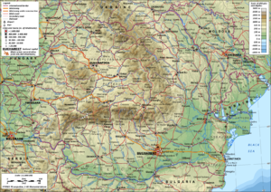
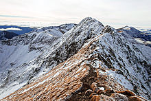
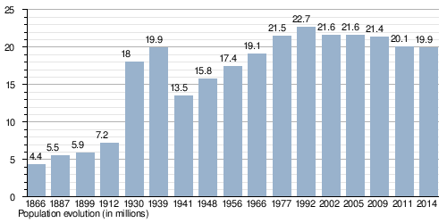

Geography
Romania is a republic in Southeast Europe which borders the Black Sea, Bulgaria, Ukraine, Hungary, Serbia, and Moldova
Learn More
Quick facts
Romania is a republic in Southeast Europe which borders the Black Sea, Bulgaria, Ukraine, Hungary, Serbia, and Moldova
Learn MoreThe earliest inhabitants of Romania were stone age hunters who lived about 8,000 BC. In time the people of Romania learned to farm and then they learned to make bronze tools. Eventually they learned to use iron. From about 600 BC the ancient Greeks traded with the people they called Getae. They founded settlements on the coast of Romania.
Learn MoreAccording to the 2011 census, Romania's population is 20,121,641. Like other countries in the region, its population is expected to gradually decline in the coming years as a result of sub-replacement fertility rates and negative net migration rate.
Learn MoreWith an area of 238,391 square kilometres (92,043 sq mi), Romania is the largest country in Southeastern Europe and the twelfth-largest in Europe. It lies between latitudes 43° and 49° N, and longitudes 20° and 30° E. The terrain is distributed roughly equally between mountains, hills and plains. The Carpathian Mountains dominate the centre of Romania, with 14 mountain ranges reaching above 2,000 m or 6,600 ft, and the highest point at Moldoveanu Peak (2,544 m or 8,346 ft, pictured right).[127] They are surrounded by the Moldavian and Transylvanian plateaus and Carpathian Basin and Wallachian plains. 47% of the country's land area is covered with natural and semi-natural ecosystems.[128] There are almost 10,000 km2 (3,900 sq mi) (about 5% of the total area) of protected areas in Romania covering 13 national parks and three biosphere reserves. 
Romania's territory has been inhabited from times long past. It is here where, in the Neolithic, some of the most prolific European cultures, Cucuteni and Gumelnita, flourished. Known by the Greeks under the name of Gets and by the Romans as Dacians, the ancient inhabitants of the present Romanian territory were first mentioned by Herodotus. Dacia was at the peak of its power under King Decebal (87-106 AD). After a first confrontation during the reign of Domitian (87-89), two extremely tough wars were necessary (101-102 and 105-106) to the Roman Empire, at the peak of its power under Emperor Trajan (98-117) to defeat Decebal and turn most of his kingdom into the Roman province called Dacia. At the time when the Daco-Roman ethno-cultural symbiosis was achieved and finalised in the 6-7th centuries by the formation of the Romanian people, in the 2-4th centuries, the Daco-Romans adopted Christianity in a Latin garb. During the 4-13th centuries the Romanian people were under the domination of migrating peoples - the Getae, the Huns, the Gepidae, the Avars, the Slavs, the Petchenegs, the Cumanians, the Tartars, and, amidst migrating waves, miraculously preserved its unity, including that of its language, spoken without dialectal variations. Starting from the 10th century, Romanians lived in three principalities: Vallachia, Moldavia and Transylvania. Until the 13th century, Hungarians occupied Transylvania and made it part of the Hungarian kingdom. In the14th century, a new power will rise: The Ottoman Empire. During many centuries, romanian voivodes like Mircea the Old, Vlad the Impaler (the legendary Dracula), Stephen the Great and Holy, struggled with ottomans. In 1600, for a short time, Michael the Brave (1593-1601) united all three Romanian principalities for the first time. Only in 1859, just two principalities, Valachia and Moldavia, succeeded to reunite in one country, under the name of Romania. First voivode of Romania was Alexandru Ioan Cuza. In 1866, the new constitution proclaimed Romania a constitutional monarchy. The first king of Romania was, Carol I of Hohenzollern-Sigmaringen, a relative of the royal family of Prussia. In May 9/21, 1877 Romania declared its full state of independence. After the World War I, in 1918, Romania united with Basarabia, Bukovina and Transylvania lead to the creation of the Great Romania. Romania was recognized as one big state at the international peace treaty from Paris in 1919. After World War II, Romania lost in favor of the USSR, Basarabia (now Republic of Moldova) and Northern Bukovina. The whole power in Romania was taken over by the communists supported by the USSR. The first communist leader was Gheorghe Gheorghiu Dej. Next was Nicolae Ceausescu with his wife, Elena until the revolution of December 1989. Now, the democracy was re-established and the country joined European Union in 2007.
This article is about the demographic features of the population of Romania, including population density, ethnicity, education level, health of the populace, economic status, religious affiliations and other aspects of the population.
Romania's population declined steadily in recent years, from 21.7 million in 2002 to 19.9 million in 2014.More specifically, in the last decade, the population of Romania decreased by 7.5%, the most important moment for the country's demography being 2008, when the number of inhabitants dropped by 600,000 people.Among the causes of population decline are high mortality, low fertility rate after 1989, and emigration.For the entire period 1990-2006 estimated population loss tops 1.5 million. But it is likely to be higher, given the explosion of migration for work after 2001 and the tendency of some migrants to settle permanently in the countries where they live.
